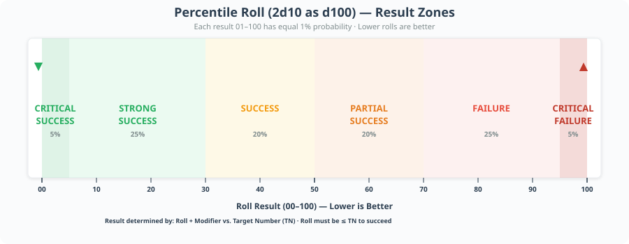
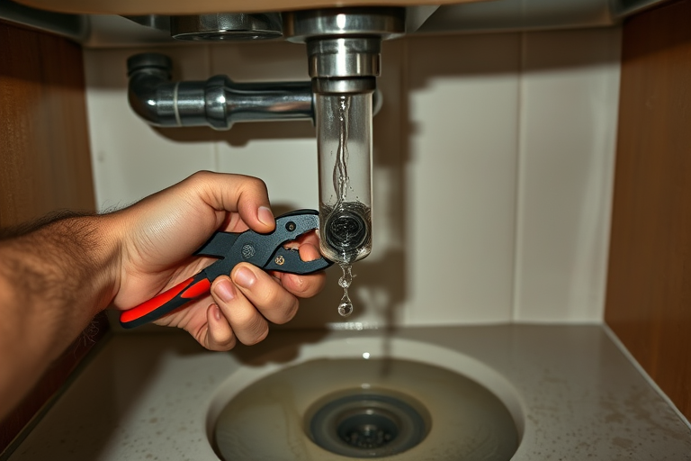
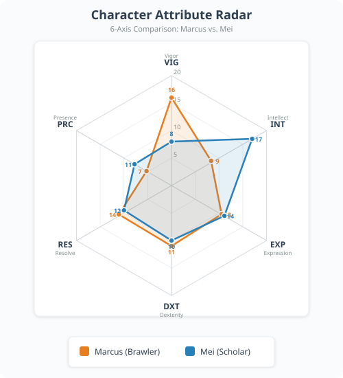
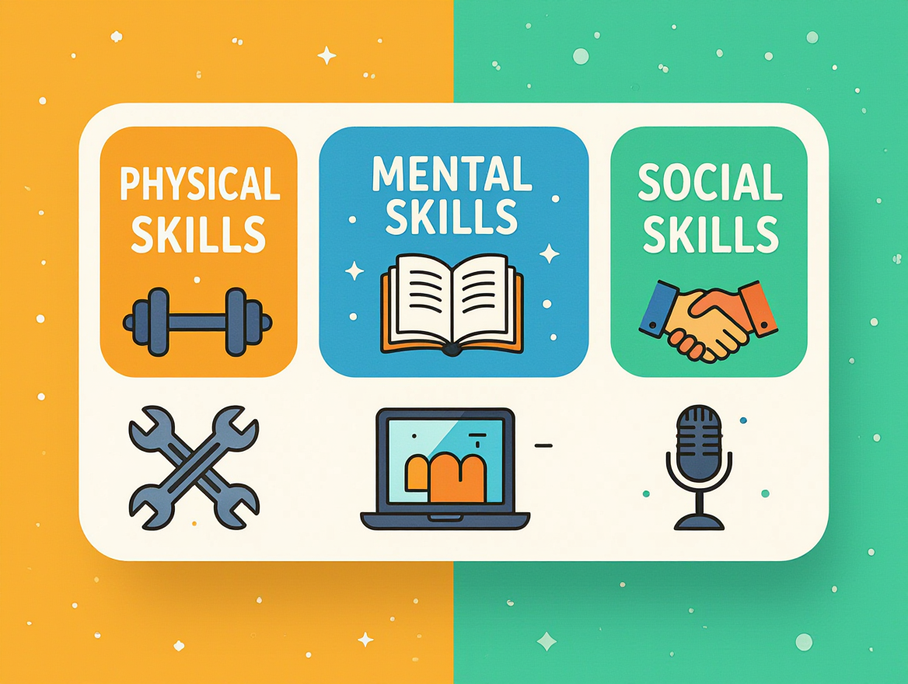
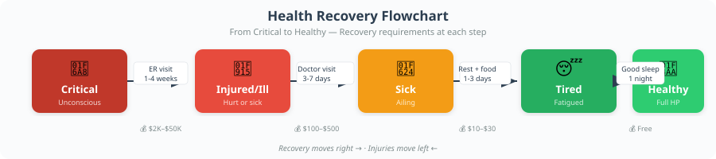
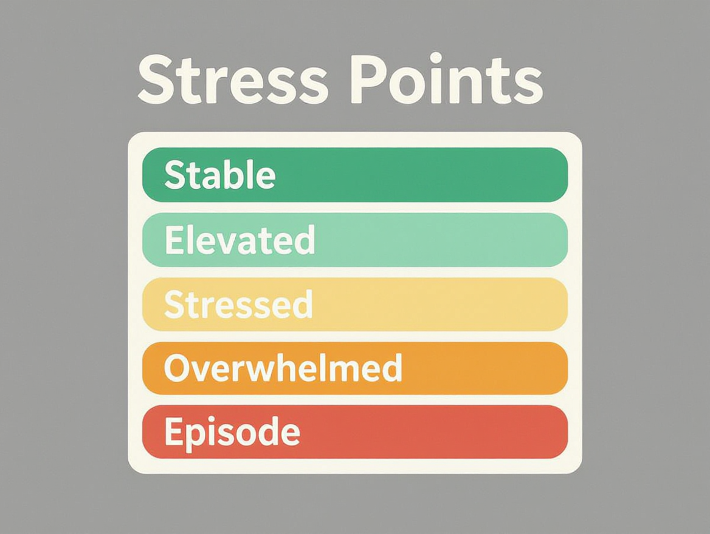
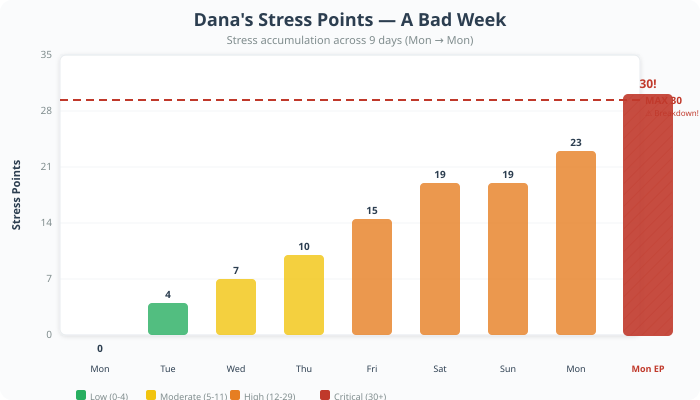

🎲 Core Mechanics
The engine that powers every action in Reality RPG. If you understand this page, you understand the game.
1. The Core Resolution: The d100 System
Almost every action in Reality RPG is resolved by rolling 2d10 (one percent die, or two d10s read as 1–100) and adding a modifier. The result is compared to a Target Number (TN).
| Roll Type | Result |
|---|---|
| Critical Success | Roll ≤ 5 (before modifiers). Extraordinary, almost lucky outcome. |
| Strong Success | Roll + modifier ≤ TN − 5. The action succeeds exceptionally well. |
| Success | Roll + modifier ≤ TN. The action succeeds normally. |
| Partial Success | Roll + modifier ≤ TN + 5. Succeeds but with a cost or complication. |
| Failure | Roll + modifier > TN + 5. The action fails. |
| Critical Failure | Roll ≥ 96 (before modifiers). Catastrophic, almost unlucky outcome. |

Mei rolls to interview well. Her TN is 55 (a medium-difficulty social task). She rolls 2d10 = 38, adds her Communication modifier (+12), for a total of 50. This is ≤ 55, so it's a Success. She makes a good impression. If she'd rolled a 12 (total 24), that would be a Critical Success — the interviewer is genuinely impressed and fast-tracks her.

James tries to fix a leaking kitchen faucet. The TN is 40 (a moderately difficult repair task). He rolls 2d10 = 44, adds his Dexterity modifier (+6), for a total of 50. This is ≤ 45 (TN + 5), so it's a Partial Success. He stops the leak, but in the process he strips a screw and cross-threaded the valve stem. The faucet works for now, but it will need a proper repair soon — and he'll have to buy a replacement part ($8–15). The fix held for two weeks before failing again.
Keisha has a big quarterly presentation at work. TN is 60 (difficult professional task). She's been preparing all week. She rolls 2d10 = 97 — a Critical Failure (≥ 96 before modifiers). The dice don't care about her preparation.
The GM narrates the catastrophe: Keisha's laptop fails to connect to the projector. She tries her USB backup — corrupted. She tries to wing it from memory, but her phone buzzes with a text from her mom that she accidentally reads aloud. She stumbles through the first five minutes, losing the room. The VP asks a question she can't answer. Her boss has to step in and rescue the presentation.
Consequences: Keisha gains +4 SP from humiliation and stress. Her boss is disappointed (−1 to their Relationship track). She's put on a Performance Improvement Plan (PIP), which means her next performance review is at +10 TN penalty. Her EXP check to maintain her professional reputation at the next team meeting is at a disadvantage. The critical failure doesn't just mean "she did poorly" — it means her career is now in active danger, and the next few months of gameplay will revolve around her trying to dig out of this hole.
2. The Six Core Attributes
Every human being in Reality RPG is defined by six core attributes, rated from 1 to 20. The modifier is calculated as (Attribute ÷ 5), rounded down. These cover every dimension of human capability.
| Attribute | Abbrev | Represents | Modifier Formula |
|---|---|---|---|
| 🏋️ Vigor | VIG | Physical health, stamina, strength, endurance, resistance to illness and injury | floor(VIG ÷ 5) |
| 🧠 Intellect | INT | Raw cognitive ability, memory, analytical thinking, learning speed, knowledge retention | floor(INT ÷ 5) |
| 💬 Expression | EXP | Communication, social perception, creativity, empathy, artistic ability, emotional intelligence | floor(EXP ÷ 5) |
| 🎯 Dexterity | DXT | Fine motor skills, coordination, hand-eye coordination, physical precision, manual tasks | floor(DXT ÷ 5) |
| 🛡️ Resolve | RES | Mental fortitude, willpower, discipline, emotional regulation, stress resistance, moral conviction | floor(RES ÷ 5) |
| ✨ Presence | PRC | Physical appearance, charisma, confidence, first impressions, social magnetism | floor(PRC ÷ 5) |


| Attribute | Score | Modifier | Why |
|---|---|---|---|
| 🏋️ Vigor | 16 | +3 | Years of physical labor; can carry heavy loads all day |
| 🧠 Intellect | 9 | +1 | Adequate but not academic; high school diploma |
| 💬 Expression | 13 | +2 | Leads crews of 20+; used to giving clear instructions |
| 🎯 Dexterity | 11 | +2 | Skilled with tools and equipment |
| 🛡️ Resolve | 14 | +2 | Handled layoffs, family pressure, and job site accidents |
| ✨ Presence | 7 | +1 | Hardworking but unremarkable appearance; dusty work clothes |
Each modifier is floor(Score ÷ 5). Marcus's Vigor of 16 means floor(16 ÷ 5) = +3. His Intellect of 9 means floor(9 ÷ 5) = +1.
Attribute Bars
| Attribute | Mod | Attribute | Mod |
|---|---|---|---|
| 1–4 | +0 | 10–14 | +2 |
| 5–9 | +1 | 15–19 | +3 |
| 20 | +4 | ||
3. Skills
Skills represent learned competencies. Each skill is tied to one or more attributes. A character's Skill Modifier = Attribute Mod + Skill Level. Skill levels range from −1 (untrained penalty) to +5 (expert).

Physical Skills (Vigor / Dexterity)
| Skill | Attribute | Covers | Skill Level Examples |
|---|---|---|---|
| 🏃 Athletics | VIG | Running, swimming, climbing, sports, physical fitness | −1: Couch potato, gets winded walking stairs +2: Regular gym-goer, runs 5K weekly +5: Semi-pro athlete, cross-fit competitor |
| 🥊 Combat | VIG | Self-defense, fighting, weapon handling (if legal) | −1: Never been in a fight, panics +2: 2 years of boxing/MMA/krav maga +5: Military combat veteran, special forces |
| 🚗 Driving | DXT | Operating vehicles, parking, navigation while driving | −1: New driver, stalls in traffic, hits curbs +2: Commutes daily, parallel parks fine +5: Professional truck/race driver, 1M+ miles |
| 🔨 Manual Labor | VIG/DXT | Construction, repair, moving furniture, physical work | −1: Can't use a power tool, breaks things +2: Handy homeowner, basic DIY repairs +5: Master carpenter/contractor, 20+ years |
| 🍳 Cooking | DXT | Preparing meals, nutrition management, food safety | −1: Microwaves frozen meals, burns toast +2: Cooks family dinners, knows basic recipes +5: Professional chef, culinary school trained |
Mental Skills (Intellect)
| Skill | Attribute | Covers | Skill Level Examples |
|---|---|---|---|
| 🎓 Academics | INT | School subjects, research, reading comprehension, test-taking | −1: Struggled in school, dropped out +2: College degree, reads widely +5: PhD, published researcher, tenured professor |
| 💻 Technology | INT | Computers, smartphones, software, troubleshooting tech | −1: Can't reset a password, fears tech +2: Comfort with office software, social media +5: Software engineer, systems architect, 15+ years |
| 💰 Finance | INT | Budgeting, investing, taxes, understanding contracts | −1: Lives paycheck to paycheck, no budget +2: Has a 401(k), files own taxes +5: CPA/CFA, manages a portfolio, financial advisor |
| 🌐 Language | INT | Foreign languages, translation, multilingual communication | −1: Monolingual, no study experience +2: Conversational in a second language +5: Fluent in 4+ languages, professional translator |
| ⚕️ Professional | INT | Job-specific knowledge: medicine, law, engineering, etc. | −1: No specialized training or credentials +2: Licensed professional, 5 years experience +5: Field expert, board-certified, industry authority |
Social Skills (Expression / Presence)
| Skill | Attribute | Covers | Skill Level Examples |
|---|---|---|---|
| 🎙️ Communication | EXP | Public speaking, writing, persuasion, negotiation | −1: Stammers under pressure, can't articulate thoughts +2: Writes clear emails, speaks at team meetings +5: TED-level speaker, master negotiator, published author |
| 🤝 Empathy | EXP | Reading others, emotional support, counseling, sensing mood | −1: Misses social cues, comes across as cold +2: Good listener, friends confide in them +5: Licensed therapist, crisis counselor, 10+ years |
| 🎭 Deception | EXP | Lying, misdirection, hiding information, acting | −1: Terrible liar, blushes and stutters +2: Can white-lie smoothly, holds poker face +5: Professional actor, undercover operative, con artist |
| ⭐ Leadership | PRC | Motivating others, managing teams, organizing groups | −1: Can't delegate, others resist their direction +2: Manages a team of 5–10, runs meetings +5: CEO, army commander, union organizer, leads hundreds |
| 🕸️ Networking | PRC | Building contacts, social climbing, making connections | −1: Strangers-only contact list, avoids social events +2: LinkedIn active, knows people in their field +5: "Knows everyone," opens doors with a phone call |
4. Health System
Instead of hit points, characters track Health on a condition track from Healthy to Dead. You can degrade from poor sleep, illness, exhaustion, injury, malnutrition, and neglect. You advance one step at a time — you can't jump from Healthy directly to Critical in a single moment (unless a single event is severe enough, at GM discretion).
Healthy
Tired
Sick
Injured
Critical
Dead
| Condition | Penalty | Description |
|---|---|---|
| 😊 Healthy | None | Feeling great. No penalties. |
| 😐 Tired | −5 on VIG checks | Poor sleep, minor illness, overwork. Very common. |
| 😫 Sick/Exhausted | −10 on all checks | Fever, severe fatigue, dehydration, hangover. |
| 🤒 Injured/Ill | −15 on all checks, cannot exert | Broken bone, hospitalization, severe infection. |
| 🏥 Critical | Cannot act without help | Life-threatening. Needs immediate medical care. |
| 💀 Dead | — | Character has died. |
4.1 What Pushes You Down the Track
Health doesn't degrade on its own — something has to push you. The GM advances a character one step on the Health Condition Track when the following thresholds are met:
| Source | Trigger | Step Advance | Example |
|---|---|---|---|
| 😴 Sleep deprivation | Less than 5 hours of sleep for 2+ consecutive nights | Healthy → Tired | Working double shifts, new parent with infant, all-nighter before exam |
| 🍔 Malnutrition | Consistently eating poorly for 1+ week (fast food only, skipping meals, starving) | Healthy → Tired | Cutting food budget to pay rent, eating only ramen for a month |
| 🤧 Illness | Fail a VIG check (TN set by environment/season — see Environment chapter) | Healthy → Tired or Tired → Sick | Winter flu, food poisoning, stomach bug from dirty restaurant |
| 🔥 Severe illness | Already at Sick, fail another VIG check (TN 45) after 3+ days untreated | Sick → Injured/Ill | Pneumonia from untreated flu, severe infection, kidney stone |
| 💪 Physical exertion | Fail a Vigor-based check by 10+ points | One step down | Trying to carry a sofa up three flights, running from danger, working 16 hours in heat |
| 🩸 Injury (non-combat) | Accident, fall, car crash, animal attack — GM sets difficulty | One step per severity | Tripping on stairs (Tired → Sick), car accident (could jump 2 steps) |
| ⚔️ Violence | See Weapons chapter for the Health Condition Track combat rules | Per weapon damage rating | Being punched, stabbed, shot — full combat damage system |
| 🌡️ Environmental | Extreme heat, cold, altitude, pollution — see Environment chapter | One step per exposure period | Heat stroke in 100°F weather, hypothermia in blizzard, asthma attack in smog |
| 🏚️ Poor living conditions | Hygiene score at 0–1 (Foul) for 1+ week — see Daily Life chapter | Tired → Sick | Living in a moldy apartment, no hot water, infested with pests |
Most single events advance a character one step on the Health Condition Track. Only truly severe events (major accidents, violence, untreated illness progressing) can advance two steps. A character can never advance more than two steps from a single event, regardless of severity — because in reality, most things don't kill you instantly. They degrade you.
4.2 Recovery
Recovery is not automatic. Characters must actively address whatever pushed them down the track:

| From → To | What's Needed | Time | Cost |
|---|---|---|---|
| Tired → Healthy | 8+ hours of sleep in a clean bed | 1 night | Free (if you have a bed) |
| Sick → Tired | Rest + hydration + proper food. Roll 2d10 + VIG mod vs TN 45 | 1–3 days | $10–30 (groceries, Gatorade, OTC meds) |
| Injured/Ill → Sick | Medical attention (doctor visit or urgent care). Roll 2d10 + VIG mod vs TN 55 | 3–7 days | $100–500 (urgent care) or $0–200 (with insurance copay) |
| Critical → Injured/Ill | Emergency room visit + hospitalization. Roll 2d10 + VIG mod vs TN 65 | 1–4 weeks | $2,000–50,000+ (ER + hospital stay) |
| Any step | Having health insurance reduces cost by 50–90% and grants +5 on recovery rolls | — | Premiums: $200–$800/month |
A character at Critical cannot jump straight to Healthy with a good night's sleep. Recovery must proceed one step at a time. Even a full hospitalization only moves Critical → Injured/Ill. From there, it's days of home recovery to reach Sick, then more days to reach Tired, then a good night's sleep to reach Healthy. This is how real recovery works.
Marcus (VIG 16, mod +3) has been working 12-hour days for a week straight. He's at Tired from sleep deprivation.
Healthy
Tired
Sick
Injured
Critical
Dead
Progression: Healthy → Tired (sleep deprivation) → Sick (flu, failed VIG roll) → Tired (rest + Gatorade, strong success) → Healthy (good night's sleep). Total: 3 days, lost $200 wages.
On Thursday night he starts running a fever. The GM has him roll 2d10 +3 vs TN 50 (winter flu season). He rolls 52 → 55 total, failure. He advances from Tired to Sick/Exhausted. That's −10 on all checks.
Friday he calls in sick. Saturday he drinks Gatorade, eats soup, sleeps 10 hours. Sunday he rolls 2d10 +3 vs TN 45 to recover to Tired. He rolls 28 → 31 total, strong success. He's back to Tired by Monday. After one good night's sleep at home, he's Healthy again — but he lost a day's wages ($200) and his boss noticed.
5. Stress and Mental Strain
Characters accumulate Stress Points (SP) from traumatic events, chronic pressure, conflict, and hardship. The maximum Stress capacity equals 20 + RES modifier × 5. Characters begin play at 0 SP. Stress persists across days — recovery requires rest, support, and time.

Stress Level Thresholds
| Stress Level | Effects |
|---|---|
| 😌 Stable | No penalty. Character functions normally. |
| 😐 Elevated | Minor distraction. −2 on RES checks. |
| 😟 Stressed | Noticeable impairment. −5 on RES and INT checks. Must make a RES check (TN 40) each night for restful sleep. |
| 😰 Overwhelmed | Significant dysfunction. −8 on all checks. One more stress push and they break. |
| 💥 Episode | SP reaches Max SP. Character has a breakdown. Condition-specific effects apply. See Mental Health chapter. |
Stress reduces through rest (−1 SP per good night's sleep), social support (−2 SP per meaningful conversation), exercise (−1 SP per workout), therapy (−3 to −5 SP per session), and time away from stressors.
Rest
−1 SP per good night's sleep
Social Support
−2 SP per meaningful conversation
Exercise
−1 SP per workout
Therapy
−3 to −5 SP per session
Time Away
From stressors
| RES Mod | RES Score | 😌 Max SP | 😐 Elevated | 😟 Stressed | 😰 Overwhelmed |
|---|---|---|---|---|---|
| +0 | 1–4 | 20 | 1–2 | 3–7 | 8–19 |
| +1 | 5–9 | 25 | 1–3 | 4–9 | 10–24 |
| +2 | 10–14 | 30 | 1–4 | 5–11 | 12–29 |
| +3 | 15–19 | 35 | 1–4 | 5–13 | 14–34 |
| +4 | 20 | 40 | 1–5 | 6–15 | 16–39 |
Episode triggers when SP reaches Max SP (not exceeds). Low-RES characters break under less stress; high-RES characters can absorb more before reaching crisis.
Dana has RES 10 (modifier +2), giving her a Max SP of 30. She starts the week at 0 SP.

| Day | Event | SP Change | Total SP | Tier |
|---|---|---|---|---|
| Monday | Verbally abused by supervisor in front of the team | +4 | 4 | 😐 Elevated |
| Tuesday | Works a 12-hour shift; car breaks down on commute home | +3 | 7 | 😟 Stressed |
| Wednesday | Fails RES check (TN 40) for sleep. Gets 4 hours, wakes exhausted. Argues with partner about money. | +3 | 10 | 😟 Stressed |
| Thursday | Called into manager's office — performance review goes poorly. Gets a written warning. | +5 | 15 | 😟 Stressed |
| Friday | Can barely focus. Makes a costly error at work. Boss pulls her aside again. | +4 | 19 | 😰 Overwhelmed |
| Saturday | Finally sleeps well (−1 SP). Calls a friend for support (−2 SP). Goes for a run (−1 SP). But then finds out rent is increasing $200/month. | +4 − 1 − 2 − 1 = 0 | 19 | 😰 Overwhelmed |
| Sunday | Can't sleep (failed RES check). Sits on the couch all day. Gets an email about a final warning at work. | +4 | 23 | 😰 Overwhelmed |
| Monday | Walks into work, hands shaking. Boss calls an emergency meeting — project deadline moved up, she's leading it. | +7 | 30 = Max SP | 💥 EPISODE |
Dana hits her Max SP of 30. She has an Episode — in this case, a debilitating panic attack at work. She must leave the building, call in sick, and likely miss the next several days. The GM consults the Mental Health chapter for Episode resolution. Recovery will require therapy, time off, and genuine support — not just a good night's sleep.
The core-mechanics stress system and the mental-health system use the same SP pool. Characters without a diagnosed condition can still accumulate stress from life events. Characters with a condition have additional triggers, episode mechanics, and recovery options.
6. Time System
Time is the most precious resource in Reality RPG. The GM tracks time at the granularity appropriate to the scene:
| Granularity | When Used | Example |
|---|---|---|
| Minutes | Tense moments, confrontations, emergencies | A fight, a job interview, a medical emergency |
| Hours | Daily activities, work shifts, travel | Going to work, commuting, grocery shopping |
| Days | Routines, recovery, projects | Getting over a cold, studying for a test |
| Weeks/Months | Long-term arcs, career progression | Training for a marathon, saving for a house |
| Years | Aging, life transitions | Changing careers, raising children, retirement |
7. Target Numbers
Standard TNs for common activities. The GM adjusts based on circumstances.
| Difficulty | TN | Examples |
|---|---|---|
| Trivial | 25 | Brushing teeth, making toast, walking to the store |
| Easy | 35 | Cooking a simple meal, sending an email, small talk |
| Medium | 50 | Having a difficult conversation, fixing a leak, studying for a test |
| Hard | 65 | Getting a promotion, convincing a stranger, assembling complex furniture |
| Very Hard | 80 | Winning a major award, landing a dream job, surviving a natural disaster |
| Near Impossible | 90 | Becoming a CEO, winning a national competition, escaping prison |
7.1 Circumstance Modifiers
Every check happens in a specific context. The GM adjusts TNs based on conditions. Negative modifiers (−) make the check easier; positive modifiers (+) make it harder. These stack.
| Favorable (− from TN) | Modifier | Unfavorable (+ to TN) |
|---|---|---|
| Have the right tools/equipment | ±5 | Wrong or no tools |
| Supportive ally helping you | ±5 | Someone actively interfering |
| Well-rested (Healthy condition) | — | Tired condition: +5 |
| — | — | Sick/Exhausted condition: +10 |
| — | — | Injured/Ill condition: +15 |
| Practiced / done this before | ±5 | Never done this, zero experience |
| Quiet, distraction-free environment | ±5 | Loud, chaotic, distracting environment |
| Ample time (no rush) | ±5 | Under time pressure / rushing |
| Calm and emotionally stable | — | Emotional distress: +5 |
| — | — | Panic, rage, or hysteria: +10 |
| Good lighting / visibility | ±5 | Poor lighting / darkness / obscured |
| Safe, comfortable environment | ±5 | Dangerous environment (risk of harm) |
| Clear instructions / prior knowledge | ±5 | Vague instructions / guessing |
| Sober and alert | — | Drowsy / mildly impaired: +5 |
| — | — | Drunk / high / heavily impaired: +15 |
Multiple modifiers stack, but the total modifier on any single check should not exceed ±20. If circumstances would push beyond that, cap it at ±20. This prevents any single check from becoming completely automatic (TN effectively 5) or completely impossible (TN effectively 105+).
Dana (from the stress example above) tries to cook a decent dinner on that terrible Saturday. She's at Overwhelmed (−8 on all checks), the kitchen is a mess (+5 TN), she's rushing because she's hungry and tired (+5 TN), but she has the right ingredients and recipes (−5 TN).
Base TN for cooking a good meal = 40 (Easy). Modifiers: Overwhelmed +8, messy kitchen +5, rushing +5, right ingredients −5 = net +13. Her effective TN is 53. She rolls 2d10 = 41, adds her Cooking mod (+4) = 45 total. Success — she manages a decent meal despite everything, barely.